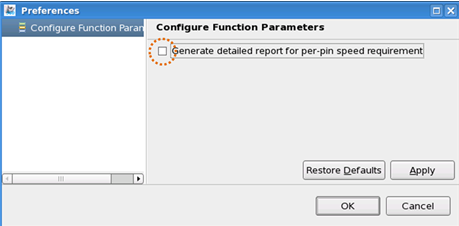

Executing the test program resource profiler
Select the desired analysis and generate a detailed report.
About this task
This report includes the following information:
- Minimum required tester resource of the current test program.
- Minimum required device licenses, such as ppTIA, tmu, loopback and accurate per-pin speed
licenses.
However, this tool does not report on the following licenses:
- Noise figure.
- Rapid source synch.
- Jitter injection.
- Psrf_pa_library.
- Memory stack.
- The current software information such as SmarTest revision, system controller environment.
This tool supports:
- SmarTest 5.4.3 and later versions on Red Hat 3 and Red Hat 5 (32-bit and 64-bit) operation systems.
- Pin Scale and Smart Scale cards.
- DPS boards and DC Scale: DPS32, DPS128, UHC4 / UHC4T, and VI32.
- Analog boards: MCA, MCB, MCC and MCE.
- RF boards: RF12, RF24.
- Utility blocks.
This tool does not support:
- HSM testers.
- SD testers.
Use the tool when you are going to deliver a test program.
Before you begin
Make sure:
- You use the "S&S_tools_package" license.
- Your test program is correct and the testflow is executed successfully.
Procedure
-
(Optional) double-click an item with the
 icon to open the Preference page:
icon to open the Preference page:

On the Preference page:
- Selecting Generate detailed report for per-pin speed requirement
generates a detailed report (can take a long time to complete).
By default, it is not selected.
- Selecting OK closes this page.
- Selecting Generate detailed report for per-pin speed requirement
generates a detailed report (can take a long time to complete).
Results
A Release Report is available in the Report view. To learn more about the report, see Test program resource profiler report.
Functional changes
- Introduced in SmarTest 7.2.2